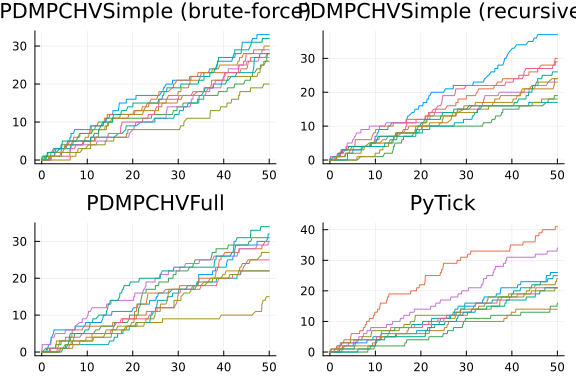
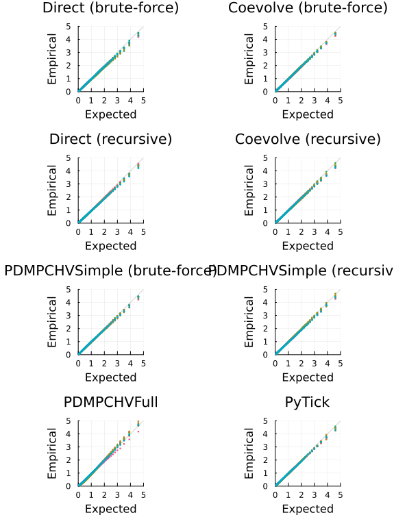
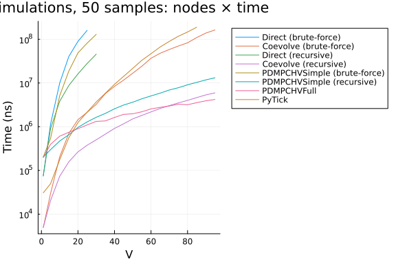

Multivariate Hawkes Model
using JumpProcesses, Graphs, Statistics, BenchmarkTools, Plots
using OrdinaryDiffEq: Tsit5
fmt = :png
width_px, height_px = default(:size);Model and example solutions
Let a graph with $V$ nodes, then the multivariate Hawkes process is characterized by $V$ point processes such that the conditional intensity rate of node $i$ connected to a set of nodes $E_i$ in the graph is given by:
\[ \lambda_i^\ast (t) = \lambda + \sum_{j \in E_i} \sum_{t_{n_j} < t} \alpha \exp \left[-\beta (t - t_{n_j}) \right]\]
This process is known as self-exciting, because the occurrence of an event $j$ at $t_{n_j}$ will increase the conditional intensity of all the processes connected to it by $\alpha$. The excited intensity then decreases at a rate proportional to $\beta$.
The conditional intensity of this process has a recursive formulation which can significantly speed the simulation. The recursive formulation for the univariate case is derived in Laub et al. [2]. We derive the compound case here. Let $t_{N_i} = \max \{ t_{n_j} < t \mid j \in E_i \}$ and
\[\begin{split} \phi_i^\ast (t) &= \sum_{j \in E_i} \sum_{t_{n_j} < t} \alpha \exp \left[-\beta (t - t_{N_i} + t_{N_i} - t_{n_j}) \right] \\ &= \exp \left[ -\beta (t - t_{N_i}) \right] \sum_{j \in E_i} \sum_{t_{n_j} \leq t_{N_i}} \alpha \exp \left[-\beta (t_{N_i} - t_{n_j}) \right] \\ &= \exp \left[ -\beta (t - t_{N_i}) \right] \left( \alpha + \phi^\ast (t_{N_i}) \right) \end{split}\]
Then the conditional intensity can be re-written in terms of $\phi_i^\ast (t_{N_i})$
\[ \lambda_i^\ast (t) = \lambda + \phi_i^\ast (t) = \lambda + \exp \left[ -\beta (t - t_{N_i}) \right] \left( \alpha + \phi_i^\ast (t_{N_i}) \right)\]
In Julia, we define a factory for the conditional intensity $\lambda_i$ which returns the brute-force or recursive versions of the intensity given node $i$ and network $g$.
function hawkes_rate(i::Int, g; use_recursion = false)
@inline @inbounds function rate_recursion(u, p, t)
λ, α, β, h, urate, ϕ = p
urate[i] = λ + exp(-β*(t - h[i]))*ϕ[i]
return urate[i]
end
@inline @inbounds function rate_brute(u, p, t)
λ, α, β, h, urate = p
x = zero(typeof(t))
for j in g[i]
for _t in reverse(h[j])
ϕij = α * exp(-β * (t - _t))
if ϕij ≈ 0
break
end
x += ϕij
end
end
urate[i] = λ + x
return urate[i]
end
if use_recursion
return rate_recursion
else
return rate_brute
end
endhawkes_rate (generic function with 1 method)Given the rate factory, we can create a jump factory which will create all the jumps in our model.
function hawkes_jump(i::Int, g; use_recursion = false)
rate = hawkes_rate(i, g; use_recursion)
urate = rate
@inbounds rateinterval(u, p, t) = p[5][i] == p[1] ? typemax(t) : 2 / p[5][i]
@inbounds lrate(u, p, t) = p[1]
@inbounds function affect_recursion!(integrator)
λ, α, β, h, _, ϕ = integrator.p
for j in g[i]
ϕ[j] *= exp(-β*(integrator.t - h[j]))
ϕ[j] += α
h[j] = integrator.t
end
integrator.u[i] += 1
end
@inbounds function affect_brute!(integrator)
push!(integrator.p[4][i], integrator.t)
integrator.u[i] += 1
end
return VariableRateJump(
rate,
use_recursion ? affect_recursion! : affect_brute!;
lrate,
urate,
rateinterval,
)
end
function hawkes_jump(u, g; use_recursion = false)
return [hawkes_jump(i, g; use_recursion) for i = 1:length(u)]
endhawkes_jump (generic function with 2 methods)We can then create a factory for Multivariate Hawkes JumpProblems. We can define two types of JumpProblems depending on the aggregator. The Direct() aggregator expects an ODEProblem since it cannot handle the SSAStepper with VariableRateJumps.
function f!(du, u, p, t)
du .= 0
nothing
end
function hawkes_problem(
p,
agg;
u = [0.0],
tspan = (0.0, 50.0),
save_positions = (false, true),
g = [[1]],
use_recursion = false,
)
oprob = ODEProblem(f!, u, tspan, p)
jumps = hawkes_jump(u, g; use_recursion)
jprob = JumpProblem(oprob, agg, jumps...; save_positions = save_positions)
return jprob
endhawkes_problem (generic function with 1 method)The Coevolve() aggregator knows how to handle the SSAStepper, so it accepts a DiscreteProblem.
function hawkes_problem(
p,
agg::Coevolve;
u = [0.0],
tspan = (0.0, 50.0),
save_positions = (false, true),
g = [[1]],
use_recursion = false,
)
dprob = DiscreteProblem(u, tspan, p)
jumps = hawkes_jump(u, g; use_recursion)
jprob =
JumpProblem(dprob, agg, jumps...; dep_graph = g, save_positions = save_positions)
return jprob
endhawkes_problem (generic function with 2 methods)Lets solve the problems defined so far. We sample a random graph sampled from the Erdős-Rényi model. This model assumes that the probability of an edge between two nodes is independent of other edges, which we fix at $0.2$. For illustration purposes, we fix $V = 10$.
V = 10
G = erdos_renyi(V, 0.2, seed = 9103)
g = [neighbors(G, i) for i = 1:nv(G)]10-element Vector{Vector{Int64}}:
[4, 7]
[8, 9]
[4, 5]
[1, 3]
[3]
[]
[1, 8, 9]
[2, 7]
[2, 7, 10]
[9]We fix the Hawkes parameters at $\lambda = 0.5 , \alpha = 0.1 , \beta = 2.0$ which ensures the process does not explode.
tspan = (0.0, 50.0)
u = [0.0 for i = 1:nv(G)]
p = (0.5, 0.1, 2.0)(0.5, 0.1, 2.0)Now, we instantiate the problems, find their solutions and plot the results.
algorithms = Tuple{Any, Any, Bool, String}[
(Direct(), Tsit5(), false, "Direct (brute-force)"),
(Coevolve(), SSAStepper(), false, "Coevolve (brute-force)"),
(Direct(), Tsit5(), true, "Direct (recursive)"),
(Coevolve(), SSAStepper(), true, "Coevolve (recursive)"),
]
let fig = []
for (i, (algo, stepper, use_recursion, label)) in enumerate(algorithms)
@info label
if use_recursion
h = zeros(eltype(tspan), nv(G))
urate = zeros(eltype(tspan), nv(G))
ϕ = zeros(eltype(tspan), nv(G))
_p = (p[1], p[2], p[3], h, ϕ, urate)
else
h = [eltype(tspan)[] for _ = 1:nv(G)]
urate = zeros(eltype(tspan), nv(G))
_p = (p[1], p[2], p[3], h, urate)
end
jump_prob = hawkes_problem(_p, algo; u, tspan, g, use_recursion)
sol = solve(jump_prob, stepper)
push!(fig, plot(sol.t, sol[1:V, :]', title=label, legend=false, format=fmt))
end
fig = plot(fig..., layout=(2,2), format=fmt, size=(width_px, 2*height_px/2))
end
Alternative libraries
We benchmark JumpProcesses.jl against PiecewiseDeterministicMarkovProcesses.jl and Python Tick library.
In order to compare with the PiecewiseDeterministicMarkovProcesses.jl, we need to reformulate our jump problem as a Piecewise Deterministic Markov Process (PDMP). In this setting, we have two options.
The simple version only requires the conditional intensity. Like above, we define a brute-force and recursive approach. Following the library's specification we define the following functions.
function hawkes_rate_simple_recursion(rate, xc, xd, p, t, issum::Bool)
λ, _, β, h, ϕ, g = p
for i in 1:length(g)
rate[i] = λ + exp(-β * (t - h[i])) * ϕ[i]
end
if issum
return sum(rate)
end
return 0.0
end
function hawkes_rate_simple_brute(rate, xc, xd, p, t, issum::Bool)
λ, α, β, h, g = p
for i in 1:length(g)
x = zero(typeof(t))
for j in g[i]
for _t in reverse(h[j])
ϕij = α * exp(-β * (t - _t))
if ϕij ≈ 0
break
end
x += ϕij
end
end
rate[i] = λ + x
end
if issum
return sum(rate)
end
return 0.0
end
function hawkes_affect_simple_recursion!(xc, xd, p, t, i::Int64)
_, α, β, h, ϕ, g = p
for j in g[i]
ϕ[j] *= exp(-β * (t - h[j]))
ϕ[j] += α
h[j] = t
end
end
function hawkes_affect_simple_brute!(xc, xd, p, t, i::Int64)
push!(p[4][i], t)
endhawkes_affect_simple_brute! (generic function with 1 method)Since this is a library for PDMP, we also need to define the ODE problem. In the simple version, we simply set it to zero.
function hawkes_drate_simple(dxc, xc, xd, p, t)
dxc .= 0
endhawkes_drate_simple (generic function with 1 method)Next, we create a factory for the Multivariate Hawkes PDMPCHVSimple problem.
import LinearAlgebra: I
using PiecewiseDeterministicMarkovProcesses
const PDMP = PiecewiseDeterministicMarkovProcesses
struct PDMPCHVSimple end
function hawkes_problem(p,
agg::PDMPCHVSimple;
u = [0.0],
tspan = (0.0, 50.0),
save_positions = (false, true),
g = [[1]],
use_recursion = true)
xd0 = Array{Int}(u)
xc0 = copy(u)
nu = one(eltype(xd0)) * I(length(xd0))
if use_recursion
jprob = PDMPProblem(hawkes_drate_simple, hawkes_rate_simple_recursion,
hawkes_affect_simple_recursion!, nu, xc0, xd0, p, tspan)
else
jprob = PDMPProblem(hawkes_drate_simple, hawkes_rate_simple_brute,
hawkes_affect_simple_brute!, nu, xc0, xd0, p, tspan)
end
return jprob
end
push!(algorithms, (PDMPCHVSimple(), CHV(Tsit5()), false, "PDMPCHVSimple (brute-force)"));
push!(algorithms, (PDMPCHVSimple(), CHV(Tsit5()), true, "PDMPCHVSimple (recursive)"));The full version requires that we describe how the conditional intensity changes with time which we derive below:
\[\begin{split} \frac{d \lambda_i^\ast (t)}{d t} &= -\beta \sum_{j \in E_i} \sum_{t_{n_j} < t} \alpha \exp \left[-\beta (t - t_{n_j}) \right] \\ &= -\beta \left( \lambda_i^\ast (t) - \lambda \right) \end{split}\]
function hawkes_drate_full(dxc, xc, xd, p, t)
λ, α, β, _, _, g = p
for i = 1:length(g)
dxc[i] = -β * (xc[i] - λ)
end
endhawkes_drate_full (generic function with 1 method)Next, we need to define the intensity rate and the jumps according to library's specification.
function hawkes_rate_full(rate, xc, xd, p, t, issum::Bool)
λ, α, β, _, _, g = p
if issum
return sum(@view(xc[1:length(g)]))
end
rate[1:length(g)] .= @view xc[1:length(g)]
return 0.0
end
function hawkes_affect_full!(xc, xd, p, t, i::Int64)
λ, α, β, _, _, g = p
for j in g[i]
xc[i] += α
end
endhawkes_affect_full! (generic function with 1 method)Finally, we create a factory for the Multivariate Hawkes PDMPCHVFull problem.
struct PDMPCHVFull end
function hawkes_problem(
p,
agg::PDMPCHVFull;
u = [0.0],
tspan = (0.0, 50.0),
save_positions = (false, true),
g = [[1]],
use_recursion = true,
)
xd0 = Array{Int}(u)
xc0 = [p[1] for i = 1:length(u)]
nu = one(eltype(xd0)) * I(length(xd0))
jprob = PDMPProblem(hawkes_drate_full, hawkes_rate_full, hawkes_affect_full!, nu, xc0, xd0, p, tspan)
return jprob
end
push!(algorithms, (PDMPCHVFull(), CHV(Tsit5()), true, "PDMPCHVFull"));The Python Tick library can be accessed with the PyCall.jl. We install the required Python dependencies with Conda.jl and define a factory for the Multivariate Hawkes PyTick problem.
const BENCHMARK_PYTHON::Bool = tryparse(Bool, get(ENV, "SCIMLBENCHMARK_PYTHON", "true"))
const REBUILD_PYCALL::Bool = tryparse(Bool, get(ENV, "SCIMLBENCHMARK_REBUILD_PYCALL", "true"))
struct PyTick end
if BENCHMARK_PYTHON
if REBUILD_PYCALL
using Pkg, Conda
# PyCall only works with Conda.ROOTENV
# tick requires python=3.8
Conda.add("python=3.8", Conda.ROOTENV)
Conda.add("numpy", Conda.ROOTENV)
Conda.pip_interop(true, Conda.ROOTENV)
Conda.pip("install", "tick", Conda.ROOTENV)
# rebuild PyCall to ensure it links to the python provided by Conda.jl
ENV["PYTHON"] = ""
Pkg.build("PyCall")
end
ENV["PYTHON"] = ""
using PyCall
@info "PyCall" PyCall.libpython PyCall.pyversion PyCall.conda
function hawkes_problem(
p,
agg::PyTick;
u = [0.0],
tspan = (0.0, 50.0),
save_positions = (false, true),
g = [[1]],
use_recursion = true,
)
λ, α, β = p
SimuHawkesSumExpKernels = pyimport("tick.hawkes")[:SimuHawkesSumExpKernels]
jprob = SimuHawkesSumExpKernels(
baseline = fill(λ, length(u)),
adjacency = [i in j ? α / β : 0.0 for j in g, i = 1:length(u), u = 1:1],
decays = [β],
end_time = tspan[2],
verbose = false,
force_simulation = true,
)
return jprob
end
push!(algorithms, (PyTick(), nothing, true, "PyTick"));
endCollecting package metadata (current_repodata.json): ...working... done
Solving environment: ...working... failed with initial frozen solve. Retryi
ng with flexible solve.
Solving environment: ...working... failed with repodata from current_repoda
ta.json, will retry with next repodata source.
Collecting package metadata (repodata.json): ...working... done
Solving environment: ...working... done
## Package Plan ##
environment location: /cache/julia-buildkite-plugin/depots/5b300254-1738-
4989-ae0a-f4d2d937f953/conda/3/x86_64
added / updated specs:
- python=3.8
The following packages will be downloaded:
package | build
---------------------------|-----------------
brotli-python-1.1.0 | py38h17151c0_1 343 KB conda-for
ge
cffi-1.16.0 | py38h6d47a40_0 234 KB conda-for
ge
conda-23.3.1 | py38h578d9bd_0 932 KB conda-for
ge
cryptography-41.0.7 | py38he241bfc_1 1.9 MB conda-for
ge
jsonpointer-2.4 | py38h578d9bd_3 16 KB conda-for
ge
libmambapy-1.4.2 | py38h7fa060d_0 261 KB conda-for
ge
mamba-1.4.2 | py38haad2881_0 49 KB conda-for
ge
numpy-1.24.4 | py38h59b608b_0 6.4 MB conda-for
ge
pycosat-0.6.6 | py38h01eb140_0 83 KB conda-for
ge
python-3.8.18 |hd12c33a_0_cpython 23.3 MB conda-fo
rge
python_abi-3.8 | 4_cp38 6 KB conda-for
ge
ruamel-1.0 | py38h578d9bd_8 7 KB conda-for
ge
ruamel.yaml-0.16.0 | py38h516909a_1 172 KB conda-for
ge
zstandard-0.22.0 | py38ha98ab4e_0 393 KB conda-for
ge
------------------------------------------------------------
Total: 34.0 MB
The following NEW packages will be INSTALLED:
ruamel conda-forge/linux-64::ruamel-1.0-py38h578d9bd_8
The following packages will be REMOVED:
ruamel.yaml.clib-0.2.7-py310h2372a71_2
The following packages will be DOWNGRADED:
brotli-python 1.1.0-py310hc6cd4ac_1 --> 1.1.0-py38h
17151c0_1
cffi 1.16.0-py310h2fee648_0 --> 1.16.0-py38
h6d47a40_0
conda 23.3.1-py310hff52083_0 --> 23.3.1-py38
h578d9bd_0
cryptography 41.0.7-py310hb8475ec_1 --> 41.0.7-py38
he241bfc_1
jsonpointer 2.4-py310hff52083_3 --> 2.4-py38h57
8d9bd_3
libmambapy 1.4.2-py310h1428755_0 --> 1.4.2-py38h
7fa060d_0
mamba 1.4.2-py310h51d5547_0 --> 1.4.2-py38h
aad2881_0
numpy 1.26.2-py310hb13e2d6_0 --> 1.24.4-py38
h59b608b_0
pycosat 0.6.6-py310h2372a71_0 --> 0.6.6-py38h
01eb140_0
python 3.10.12-hd12c33a_0_cpython --> 3.8.18-hd12
c33a_0_cpython
python_abi 3.10-4_cp310 --> 3.8-4_cp38
ruamel.yaml 0.17.40-py310h2372a71_0 --> 0.16.0-py38
h516909a_1
zstandard 0.22.0-py310h1275a96_0 --> 0.22.0-py38
ha98ab4e_0
Preparing transaction: ...working... done
Verifying transaction: ...working... done
Executing transaction: ...working... done
Collecting package metadata (current_repodata.json): ...working... done
Solving environment: ...working... done
# All requested packages already installed.
Collecting tick
Downloading tick-0.7.0.1-cp38-cp38-manylinux2014_x86_64.whl (10.8 MB)
━━━━━━━━━━━━━━━━━━━━━━━━━━━━━━━━━━━━━━━━ 10.8/10.8 MB 12.3 MB/s eta 0:
00:00
Requirement already satisfied: numpy in /cache/julia-buildkite-plugin/depot
s/5b300254-1738-4989-ae0a-f4d2d937f953/conda/3/x86_64/lib/python3.8/site-pa
ckages (from tick) (1.24.4)
Collecting scipy (from tick)
Downloading scipy-1.10.1-cp38-cp38-manylinux_2_17_x86_64.manylinux2014_x8
6_64.whl (34.5 MB)
━━━━━━━━━━━━━━━━━━━━━━━━━━━━━━━━━━━━━━━━ 34.5/34.5 MB 79.3 MB/s eta 0:
00:00
Collecting numpydoc (from tick)
Obtaining dependency information for numpydoc from https://files.pythonho
sted.org/packages/9c/94/09c437fd4a5fb5adf0468c0865c781dbc11d399544b55f1163d
5d4414afb/numpydoc-1.6.0-py3-none-any.whl.metadata
Downloading numpydoc-1.6.0-py3-none-any.whl.metadata (4.2 kB)
Collecting matplotlib (from tick)
Obtaining dependency information for matplotlib from https://files.python
hosted.org/packages/3c/25/c63fb77ceece3fbd85142381f97c7aeae6aeaf9a2993a2032
2fc9ae1ca7b/matplotlib-3.7.4-cp38-cp38-manylinux_2_12_x86_64.manylinux2010_
x86_64.whl.metadata
Downloading matplotlib-3.7.4-cp38-cp38-manylinux_2_12_x86_64.manylinux201
0_x86_64.whl.metadata (5.7 kB)
Collecting sphinx (from tick)
Obtaining dependency information for sphinx from https://files.pythonhost
ed.org/packages/48/17/325cf6a257d84751a48ae90752b3d8fe0be8f9535b6253add61c4
9d0d9bc/sphinx-7.1.2-py3-none-any.whl.metadata
Downloading sphinx-7.1.2-py3-none-any.whl.metadata (5.8 kB)
Collecting pandas (from tick)
Obtaining dependency information for pandas from https://files.pythonhost
ed.org/packages/f8/7f/5b047effafbdd34e52c9e2d7e44f729a0655efafb22198c45cf69
2cdc157/pandas-2.0.3-cp38-cp38-manylinux_2_17_x86_64.manylinux2014_x86_64.w
hl.metadata
Downloading pandas-2.0.3-cp38-cp38-manylinux_2_17_x86_64.manylinux2014_x8
6_64.whl.metadata (18 kB)
Collecting dill (from tick)
Obtaining dependency information for dill from https://files.pythonhosted
.org/packages/f5/3a/74a29b11cf2cdfcd6ba89c0cecd70b37cd1ba7b77978ce611eb7a14
6a832/dill-0.3.7-py3-none-any.whl.metadata
Downloading dill-0.3.7-py3-none-any.whl.metadata (9.9 kB)
Collecting scikit-learn (from tick)
Obtaining dependency information for scikit-learn from https://files.pyth
onhosted.org/packages/3f/48/6fdd99f5717045f9984616b5c2ec683d6286d30c0ac2345
63062132b83ab/scikit_learn-1.3.2-cp38-cp38-manylinux_2_17_x86_64.manylinux2
014_x86_64.whl.metadata
Downloading scikit_learn-1.3.2-cp38-cp38-manylinux_2_17_x86_64.manylinux2
014_x86_64.whl.metadata (11 kB)
Collecting contourpy>=1.0.1 (from matplotlib->tick)
Obtaining dependency information for contourpy>=1.0.1 from https://files.
pythonhosted.org/packages/8e/71/7f20855592cc929bc206810432b991ec4c702dc26b0
567b132e52c85536f/contourpy-1.1.1-cp38-cp38-manylinux_2_17_x86_64.manylinux
2014_x86_64.whl.metadata
Downloading contourpy-1.1.1-cp38-cp38-manylinux_2_17_x86_64.manylinux2014
_x86_64.whl.metadata (5.9 kB)
Collecting cycler>=0.10 (from matplotlib->tick)
Obtaining dependency information for cycler>=0.10 from https://files.pyth
onhosted.org/packages/e7/05/c19819d5e3d95294a6f5947fb9b9629efb316b96de511b4
18c53d245aae6/cycler-0.12.1-py3-none-any.whl.metadata
Downloading cycler-0.12.1-py3-none-any.whl.metadata (3.8 kB)
Collecting fonttools>=4.22.0 (from matplotlib->tick)
Obtaining dependency information for fonttools>=4.22.0 from https://files
.pythonhosted.org/packages/68/d9/8a3d067a681d37c3f83f8cce96ecdb414bf4b1b627
b5cf0a39ec80dff6c5/fonttools-4.46.0-cp38-cp38-manylinux_2_17_x86_64.manylin
ux2014_x86_64.whl.metadata
Downloading fonttools-4.46.0-cp38-cp38-manylinux_2_17_x86_64.manylinux201
4_x86_64.whl.metadata (156 kB)
━━━━━━━━━━━━━━━━━━━━━━━━━━━━━━━━━━━━━━ 156.2/156.2 kB 79.4 MB/s eta 0:
00:00
Collecting kiwisolver>=1.0.1 (from matplotlib->tick)
Obtaining dependency information for kiwisolver>=1.0.1 from https://files
.pythonhosted.org/packages/d2/55/7021ffcc8cb26a520bb051aa0a3d08daf200cde945
e5863d5768161e2d3d/kiwisolver-1.4.5-cp38-cp38-manylinux_2_5_x86_64.manylinu
x1_x86_64.whl.metadata
Downloading kiwisolver-1.4.5-cp38-cp38-manylinux_2_5_x86_64.manylinux1_x8
6_64.whl.metadata (6.4 kB)
Requirement already satisfied: packaging>=20.0 in /cache/julia-buildkite-pl
ugin/depots/5b300254-1738-4989-ae0a-f4d2d937f953/conda/3/x86_64/lib/python3
.8/site-packages (from matplotlib->tick) (23.2)
Collecting pillow>=6.2.0 (from matplotlib->tick)
Obtaining dependency information for pillow>=6.2.0 from https://files.pyt
honhosted.org/packages/1e/74/638f982ab43fb3b19c8a151b1a0065cafefe436f8590c1
c57d5fdf2475f1/Pillow-10.1.0-cp38-cp38-manylinux_2_28_x86_64.whl.metadata
Downloading Pillow-10.1.0-cp38-cp38-manylinux_2_28_x86_64.whl.metadata (9
.5 kB)
Collecting pyparsing>=2.3.1 (from matplotlib->tick)
Obtaining dependency information for pyparsing>=2.3.1 from https://files.
pythonhosted.org/packages/39/92/8486ede85fcc088f1b3dba4ce92dd29d126fd96b000
8ea213167940a2475/pyparsing-3.1.1-py3-none-any.whl.metadata
Downloading pyparsing-3.1.1-py3-none-any.whl.metadata (5.1 kB)
Collecting python-dateutil>=2.7 (from matplotlib->tick)
Downloading python_dateutil-2.8.2-py2.py3-none-any.whl (247 kB)
━━━━━━━━━━━━━━━━━━━━━━━━━━━━━━━━━━━━━━ 247.7/247.7 kB 96.8 MB/s eta 0:
00:00
Collecting importlib-resources>=3.2.0 (from matplotlib->tick)
Obtaining dependency information for importlib-resources>=3.2.0 from http
s://files.pythonhosted.org/packages/93/e8/facde510585869b5ec694e8e0363ffe4e
ba067cb357a8398a55f6a1f8023/importlib_resources-6.1.1-py3-none-any.whl.meta
data
Downloading importlib_resources-6.1.1-py3-none-any.whl.metadata (4.1 kB)
Collecting Jinja2>=2.10 (from numpydoc->tick)
Downloading Jinja2-3.1.2-py3-none-any.whl (133 kB)
━━━━━━━━━━━━━━━━━━━━━━━━━━━━━━━━━━━━━━ 133.1/133.1 kB 74.1 MB/s eta 0:
00:00
Collecting tabulate>=0.8.10 (from numpydoc->tick)
Downloading tabulate-0.9.0-py3-none-any.whl (35 kB)
Collecting tomli>=1.1.0 (from numpydoc->tick)
Downloading tomli-2.0.1-py3-none-any.whl (12 kB)
Collecting sphinxcontrib-applehelp (from sphinx->tick)
Downloading sphinxcontrib_applehelp-1.0.4-py3-none-any.whl (120 kB)
━━━━━━━━━━━━━━━━━━━━━━━━━━━━━━━━━━━━━━ 120.6/120.6 kB 70.2 MB/s eta 0:
00:00
Collecting sphinxcontrib-devhelp (from sphinx->tick)
Downloading sphinxcontrib_devhelp-1.0.2-py2.py3-none-any.whl (84 kB)
━━━━━━━━━━━━━━━━━━━━━━━━━━━━━━━━━━━━━━━━ 84.7/84.7 kB 54.3 MB/s eta 0:
00:00
Collecting sphinxcontrib-jsmath (from sphinx->tick)
Downloading sphinxcontrib_jsmath-1.0.1-py2.py3-none-any.whl (5.1 kB)
Collecting sphinxcontrib-htmlhelp>=2.0.0 (from sphinx->tick)
Downloading sphinxcontrib_htmlhelp-2.0.1-py3-none-any.whl (99 kB)
━━━━━━━━━━━━━━━━━━━━━━━━━━━━━━━━━━━━━━━━ 99.8/99.8 kB 61.3 MB/s eta 0:
00:00
Collecting sphinxcontrib-serializinghtml>=1.1.5 (from sphinx->tick)
Downloading sphinxcontrib_serializinghtml-1.1.5-py2.py3-none-any.whl (94
kB)
━━━━━━━━━━━━━━━━━━━━━━━━━━━━━━━━━━━━━━━━ 94.0/94.0 kB 60.2 MB/s eta 0:
00:00
Collecting sphinxcontrib-qthelp (from sphinx->tick)
Downloading sphinxcontrib_qthelp-1.0.3-py2.py3-none-any.whl (90 kB)
━━━━━━━━━━━━━━━━━━━━━━━━━━━━━━━━━━━━━━━━ 90.6/90.6 kB 55.3 MB/s eta 0:
00:00
Collecting Pygments>=2.13 (from sphinx->tick)
Obtaining dependency information for Pygments>=2.13 from https://files.py
thonhosted.org/packages/97/9c/372fef8377a6e340b1704768d20daaded98bf13282b53
27beb2e2fe2c7ef/pygments-2.17.2-py3-none-any.whl.metadata
Downloading pygments-2.17.2-py3-none-any.whl.metadata (2.6 kB)
Collecting docutils<0.21,>=0.18.1 (from sphinx->tick)
Obtaining dependency information for docutils<0.21,>=0.18.1 from https://
files.pythonhosted.org/packages/26/87/f238c0670b94533ac0353a4e2a1a771a0cc73
277b88bff23d3ae35a256c1/docutils-0.20.1-py3-none-any.whl.metadata
Downloading docutils-0.20.1-py3-none-any.whl.metadata (2.8 kB)
Collecting snowballstemmer>=2.0 (from sphinx->tick)
Downloading snowballstemmer-2.2.0-py2.py3-none-any.whl (93 kB)
━━━━━━━━━━━━━━━━━━━━━━━━━━━━━━━━━━━━━━━━ 93.0/93.0 kB 57.9 MB/s eta 0:
00:00
Collecting babel>=2.9 (from sphinx->tick)
Obtaining dependency information for babel>=2.9 from https://files.python
hosted.org/packages/86/14/5dc2eb02b7cc87b2f95930310a2cc5229198414919a116b56
4832c747bc1/Babel-2.13.1-py3-none-any.whl.metadata
Downloading Babel-2.13.1-py3-none-any.whl.metadata (1.6 kB)
Collecting alabaster<0.8,>=0.7 (from sphinx->tick)
Downloading alabaster-0.7.13-py3-none-any.whl (13 kB)
Collecting imagesize>=1.3 (from sphinx->tick)
Downloading imagesize-1.4.1-py2.py3-none-any.whl (8.8 kB)
Requirement already satisfied: requests>=2.25.0 in /cache/julia-buildkite-p
lugin/depots/5b300254-1738-4989-ae0a-f4d2d937f953/conda/3/x86_64/lib/python
3.8/site-packages (from sphinx->tick) (2.31.0)
Collecting importlib-metadata>=4.8 (from sphinx->tick)
Obtaining dependency information for importlib-metadata>=4.8 from https:/
/files.pythonhosted.org/packages/73/26/9777cfe0cdc8181a32eaf542f4a2a435e5ab
a5dd38f41cfc0a532dc51027/importlib_metadata-7.0.0-py3-none-any.whl.metadata
Downloading importlib_metadata-7.0.0-py3-none-any.whl.metadata (4.9 kB)
Collecting pytz>=2020.1 (from pandas->tick)
Obtaining dependency information for pytz>=2020.1 from https://files.pyth
onhosted.org/packages/32/4d/aaf7eff5deb402fd9a24a1449a8119f00d74ae9c2efa79f
8ef9994261fc2/pytz-2023.3.post1-py2.py3-none-any.whl.metadata
Downloading pytz-2023.3.post1-py2.py3-none-any.whl.metadata (22 kB)
Collecting tzdata>=2022.1 (from pandas->tick)
Downloading tzdata-2023.3-py2.py3-none-any.whl (341 kB)
━━━━━━━━━━━━━━━━━━━━━━━━━━━━━━━━━━━━━ 341.8/341.8 kB 120.8 MB/s eta 0:
00:00
Collecting joblib>=1.1.1 (from scikit-learn->tick)
Obtaining dependency information for joblib>=1.1.1 from https://files.pyt
honhosted.org/packages/10/40/d551139c85db202f1f384ba8bcf96aca2f329440a844f9
24c8a0040b6d02/joblib-1.3.2-py3-none-any.whl.metadata
Downloading joblib-1.3.2-py3-none-any.whl.metadata (5.4 kB)
Collecting threadpoolctl>=2.0.0 (from scikit-learn->tick)
Obtaining dependency information for threadpoolctl>=2.0.0 from https://fi
les.pythonhosted.org/packages/81/12/fd4dea011af9d69e1cad05c75f3f7202cdcbeac
9b712eea58ca779a72865/threadpoolctl-3.2.0-py3-none-any.whl.metadata
Downloading threadpoolctl-3.2.0-py3-none-any.whl.metadata (10.0 kB)
Collecting zipp>=0.5 (from importlib-metadata>=4.8->sphinx->tick)
Obtaining dependency information for zipp>=0.5 from https://files.pythonh
osted.org/packages/d9/66/48866fc6b158c81cc2bfecc04c480f105c6040e8b077bc54c6
34b4a67926/zipp-3.17.0-py3-none-any.whl.metadata
Downloading zipp-3.17.0-py3-none-any.whl.metadata (3.7 kB)
Collecting MarkupSafe>=2.0 (from Jinja2>=2.10->numpydoc->tick)
Obtaining dependency information for MarkupSafe>=2.0 from https://files.p
ythonhosted.org/packages/de/e2/32c14301bb023986dff527a49325b6259cab4ebb4633
f69de54af312fc45/MarkupSafe-2.1.3-cp38-cp38-manylinux_2_17_x86_64.manylinux
2014_x86_64.whl.metadata
Downloading MarkupSafe-2.1.3-cp38-cp38-manylinux_2_17_x86_64.manylinux201
4_x86_64.whl.metadata (3.0 kB)
Collecting six>=1.5 (from python-dateutil>=2.7->matplotlib->tick)
Downloading six-1.16.0-py2.py3-none-any.whl (11 kB)
Requirement already satisfied: charset-normalizer<4,>=2 in /cache/julia-bui
ldkite-plugin/depots/5b300254-1738-4989-ae0a-f4d2d937f953/conda/3/x86_64/li
b/python3.8/site-packages (from requests>=2.25.0->sphinx->tick) (3.3.2)
Requirement already satisfied: idna<4,>=2.5 in /cache/julia-buildkite-plugi
n/depots/5b300254-1738-4989-ae0a-f4d2d937f953/conda/3/x86_64/lib/python3.8/
site-packages (from requests>=2.25.0->sphinx->tick) (3.6)
Requirement already satisfied: urllib3<3,>=1.21.1 in /cache/julia-buildkite
-plugin/depots/5b300254-1738-4989-ae0a-f4d2d937f953/conda/3/x86_64/lib/pyth
on3.8/site-packages (from requests>=2.25.0->sphinx->tick) (2.1.0)
Requirement already satisfied: certifi>=2017.4.17 in /cache/julia-buildkite
-plugin/depots/5b300254-1738-4989-ae0a-f4d2d937f953/conda/3/x86_64/lib/pyth
on3.8/site-packages (from requests>=2.25.0->sphinx->tick) (2023.11.17)
Downloading dill-0.3.7-py3-none-any.whl (115 kB)
━━━━━━━━━━━━━━━━━━━━━━━━━━━━━━━━━━━━━━━━ 115.3/115.3 kB 63.8 MB/s eta 0:
00:00
Downloading matplotlib-3.7.4-cp38-cp38-manylinux_2_12_x86_64.manylinux2010_
x86_64.whl (9.2 MB)
━━━━━━━━━━━━━━━━━━━━━━━━━━━━━━━━━━━━━━━━ 9.2/9.2 MB 145.3 MB/s eta 0:00:
00
Downloading numpydoc-1.6.0-py3-none-any.whl (61 kB)
━━━━━━━━━━━━━━━━━━━━━━━━━━━━━━━━━━━━━━━━ 61.7/61.7 kB 40.2 MB/s eta 0:00
:00
Downloading sphinx-7.1.2-py3-none-any.whl (3.2 MB)
━━━━━━━━━━━━━━━━━━━━━━━━━━━━━━━━━━━━━━━━ 3.2/3.2 MB 64.3 MB/s eta 0:00:0
0
Downloading pandas-2.0.3-cp38-cp38-manylinux_2_17_x86_64.manylinux2014_x86_
64.whl (12.4 MB)
━━━━━━━━━━━━━━━━━━━━━━━━━━━━━━━━━━━━━━━━ 12.4/12.4 MB 105.2 MB/s eta 0:0
0:00
Downloading scikit_learn-1.3.2-cp38-cp38-manylinux_2_17_x86_64.manylinux201
4_x86_64.whl (11.1 MB)
━━━━━━━━━━━━━━━━━━━━━━━━━━━━━━━━━━━━━━━━ 11.1/11.1 MB 141.2 MB/s eta 0:0
0:00
Downloading Babel-2.13.1-py3-none-any.whl (10.1 MB)
━━━━━━━━━━━━━━━━━━━━━━━━━━━━━━━━━━━━━━━━ 10.1/10.1 MB 156.8 MB/s eta 0:0
0:00
Downloading contourpy-1.1.1-cp38-cp38-manylinux_2_17_x86_64.manylinux2014_x
86_64.whl (301 kB)
━━━━━━━━━━━━━━━━━━━━━━━━━━━━━━━━━━━━━━━ 301.1/301.1 kB 112.3 MB/s eta 0:
00:00
Downloading cycler-0.12.1-py3-none-any.whl (8.3 kB)
Downloading docutils-0.20.1-py3-none-any.whl (572 kB)
━━━━━━━━━━━━━━━━━━━━━━━━━━━━━━━━━━━━━━━ 572.7/572.7 kB 143.8 MB/s eta 0:
00:00
Downloading fonttools-4.46.0-cp38-cp38-manylinux_2_17_x86_64.manylinux2014_
x86_64.whl (4.7 MB)
━━━━━━━━━━━━━━━━━━━━━━━━━━━━━━━━━━━━━━━━ 4.7/4.7 MB 158.4 MB/s eta 0:00:
00
Downloading importlib_metadata-7.0.0-py3-none-any.whl (23 kB)
Downloading importlib_resources-6.1.1-py3-none-any.whl (33 kB)
Downloading joblib-1.3.2-py3-none-any.whl (302 kB)
━━━━━━━━━━━━━━━━━━━━━━━━━━━━━━━━━━━━━━━ 302.2/302.2 kB 115.4 MB/s eta 0:
00:00
Downloading kiwisolver-1.4.5-cp38-cp38-manylinux_2_5_x86_64.manylinux1_x86_
64.whl (1.2 MB)
━━━━━━━━━━━━━━━━━━━━━━━━━━━━━━━━━━━━━━━━ 1.2/1.2 MB 146.0 MB/s eta 0:00:
00
Downloading Pillow-10.1.0-cp38-cp38-manylinux_2_28_x86_64.whl (3.6 MB)
━━━━━━━━━━━━━━━━━━━━━━━━━━━━━━━━━━━━━━━━ 3.6/3.6 MB 154.9 MB/s eta 0:00:
00
Downloading pygments-2.17.2-py3-none-any.whl (1.2 MB)
━━━━━━━━━━━━━━━━━━━━━━━━━━━━━━━━━━━━━━━━ 1.2/1.2 MB 155.4 MB/s eta 0:00:
00
Downloading pyparsing-3.1.1-py3-none-any.whl (103 kB)
━━━━━━━━━━━━━━━━━━━━━━━━━━━━━━━━━━━━━━━━ 103.1/103.1 kB 65.4 MB/s eta 0:
00:00
Downloading pytz-2023.3.post1-py2.py3-none-any.whl (502 kB)
━━━━━━━━━━━━━━━━━━━━━━━━━━━━━━━━━━━━━━━ 502.5/502.5 kB 139.2 MB/s eta 0:
00:00
Downloading threadpoolctl-3.2.0-py3-none-any.whl (15 kB)
Downloading MarkupSafe-2.1.3-cp38-cp38-manylinux_2_17_x86_64.manylinux2014_
x86_64.whl (25 kB)
Downloading zipp-3.17.0-py3-none-any.whl (7.4 kB)
Installing collected packages: snowballstemmer, pytz, zipp, tzdata, tomli,
threadpoolctl, tabulate, sphinxcontrib-serializinghtml, sphinxcontrib-qthel
p, sphinxcontrib-jsmath, sphinxcontrib-htmlhelp, sphinxcontrib-devhelp, sph
inxcontrib-applehelp, six, scipy, pyparsing, Pygments, pillow, MarkupSafe,
kiwisolver, joblib, imagesize, fonttools, docutils, dill, cycler, contourpy
, babel, alabaster, scikit-learn, python-dateutil, Jinja2, importlib-resour
ces, importlib-metadata, sphinx, pandas, matplotlib, numpydoc, tick
Successfully installed Jinja2-3.1.2 MarkupSafe-2.1.3 Pygments-2.17.2 alabas
ter-0.7.13 babel-2.13.1 contourpy-1.1.1 cycler-0.12.1 dill-0.3.7 docutils-0
.20.1 fonttools-4.46.0 imagesize-1.4.1 importlib-metadata-7.0.0 importlib-r
esources-6.1.1 joblib-1.3.2 kiwisolver-1.4.5 matplotlib-3.7.4 numpydoc-1.6.
0 pandas-2.0.3 pillow-10.1.0 pyparsing-3.1.1 python-dateutil-2.8.2 pytz-202
3.3.post1 scikit-learn-1.3.2 scipy-1.10.1 six-1.16.0 snowballstemmer-2.2.0
sphinx-7.1.2 sphinxcontrib-applehelp-1.0.4 sphinxcontrib-devhelp-1.0.2 sphi
nxcontrib-htmlhelp-2.0.1 sphinxcontrib-jsmath-1.0.1 sphinxcontrib-qthelp-1.
0.3 sphinxcontrib-serializinghtml-1.1.5 tabulate-0.9.0 threadpoolctl-3.2.0
tick-0.7.0.1 tomli-2.0.1 tzdata-2023.3 zipp-3.17.0
8-element Vector{Tuple{Any, Any, Bool, String}}:
(JumpProcesses.Direct(), Tsit5(; stage_limiter! = trivial_limiter!, step_l
imiter! = trivial_limiter!, thread = static(false),), 0, "Direct (brute-for
ce)")
(JumpProcesses.Coevolve(), JumpProcesses.SSAStepper(), 0, "Coevolve (brute
-force)")
(JumpProcesses.Direct(), Tsit5(; stage_limiter! = trivial_limiter!, step_l
imiter! = trivial_limiter!, thread = static(false),), 1, "Direct (recursive
)")
(JumpProcesses.Coevolve(), JumpProcesses.SSAStepper(), 1, "Coevolve (recur
sive)")
(Main.var"##WeaveSandBox#349".PDMPCHVSimple(), PiecewiseDeterministicMarko
vProcesses.CHV{OrdinaryDiffEq.Tsit5{typeof(OrdinaryDiffEq.trivial_limiter!)
, typeof(OrdinaryDiffEq.trivial_limiter!), Static.False}}(Tsit5(; stage_lim
iter! = trivial_limiter!, step_limiter! = trivial_limiter!, thread = static
(false),)), 0, "PDMPCHVSimple (brute-force)")
(Main.var"##WeaveSandBox#349".PDMPCHVSimple(), PiecewiseDeterministicMarko
vProcesses.CHV{OrdinaryDiffEq.Tsit5{typeof(OrdinaryDiffEq.trivial_limiter!)
, typeof(OrdinaryDiffEq.trivial_limiter!), Static.False}}(Tsit5(; stage_lim
iter! = trivial_limiter!, step_limiter! = trivial_limiter!, thread = static
(false),)), 1, "PDMPCHVSimple (recursive)")
(Main.var"##WeaveSandBox#349".PDMPCHVFull(), PiecewiseDeterministicMarkovP
rocesses.CHV{OrdinaryDiffEq.Tsit5{typeof(OrdinaryDiffEq.trivial_limiter!),
typeof(OrdinaryDiffEq.trivial_limiter!), Static.False}}(Tsit5(; stage_limit
er! = trivial_limiter!, step_limiter! = trivial_limiter!, thread = static(f
alse),)), 1, "PDMPCHVFull")
(Main.var"##WeaveSandBox#349".PyTick(), nothing, 1, "PyTick")Now, we instantiate the problems, find their solutions and plot the results.
let fig = []
for (i, (algo, stepper, use_recursion, label)) in enumerate(algorithms[5:end])
@info label
if algo isa PyTick
_p = (p[1], p[2], p[3])
jump_prob = hawkes_problem(_p, algo; u, tspan, g, use_recursion)
jump_prob.reset()
jump_prob.simulate()
t = tspan[1]:0.1:tspan[2]
N = [[sum(jumps .< _t) for _t in t] for jumps in jump_prob.timestamps]
push!(fig, plot(t, N, title=label, legend=false, format=fmt))
elseif algo isa PDMPCHVSimple
if use_recursion
h = zeros(eltype(tspan), nv(G))
ϕ = zeros(eltype(tspan), nv(G))
_p = (p[1], p[2], p[3], h, ϕ, g)
else
h = [eltype(tspan)[] for _ in 1:nv(G)]
_p = (p[1], p[2], p[3], h, g)
end
jump_prob = hawkes_problem(_p, algo; u, tspan, g, use_recursion)
sol = solve(jump_prob, stepper)
push!(fig, plot(sol.time, sol.xd[1:V, :]', title=label, legend=false, format=fmt))
elseif algo isa PDMPCHVFull
_p = (p[1], p[2], p[3], nothing, nothing, g)
jump_prob = hawkes_problem(_p, algo; u, tspan, g, use_recursion)
sol = solve(jump_prob, stepper)
push!(fig, plot(sol.time, sol.xd[1:V, :]', title=label, legend=false, format=fmt))
end
end
fig = plot(fig..., layout=(2,2), format=fmt, size=(width_px, 2*height_px/2))
end
Correctness: QQ-Plots
We check that the algorithms produce correct simulation by inspecting their QQ-plots. Point process theory says that transforming the simulated points using the compensator should produce points whose inter-arrival duration is distributed according to the exponential distribution (see Section 7.4 [1]).
The compensator of any point process is the integral of the conditional intensity $\Lambda_i^\ast(t) = \int_0^t \lambda_i^\ast(u) du$. The compensator for the Multivariate Hawkes process is defined below.
\[ \Lambda_i^\ast(t) = \lambda t + \frac{\alpha}{\beta} \sum_{j \in E_i} \sum_{t_{n_j} < t} ( 1 - \exp \left[-\beta (t - t_{n_j}) \right])\]
function hawkes_Λ(i::Int, g, p)
@inline @inbounds function Λ(t, h)
λ, α, β = p
x = λ * t
for j in g[i]
for _t in h[j]
if _t >= t
break
end
x += (α / β) * (1 - exp(-β * (t - _t)))
end
end
return x
end
return Λ
end
function hawkes_Λ(g, p)
return [hawkes_Λ(i, g, p) for i = 1:length(g)]
end
Λ = hawkes_Λ(g, p)10-element Vector{Main.var"##WeaveSandBox#349".var"#Λ#33"{Int64, Vector{Vec
tor{Int64}}, Tuple{Float64, Float64, Float64}}}:
(::Main.var"##WeaveSandBox#349".var"#Λ#33"{Int64, Vector{Vector{Int64}}, T
uple{Float64, Float64, Float64}}) (generic function with 1 method)
(::Main.var"##WeaveSandBox#349".var"#Λ#33"{Int64, Vector{Vector{Int64}}, T
uple{Float64, Float64, Float64}}) (generic function with 1 method)
(::Main.var"##WeaveSandBox#349".var"#Λ#33"{Int64, Vector{Vector{Int64}}, T
uple{Float64, Float64, Float64}}) (generic function with 1 method)
(::Main.var"##WeaveSandBox#349".var"#Λ#33"{Int64, Vector{Vector{Int64}}, T
uple{Float64, Float64, Float64}}) (generic function with 1 method)
(::Main.var"##WeaveSandBox#349".var"#Λ#33"{Int64, Vector{Vector{Int64}}, T
uple{Float64, Float64, Float64}}) (generic function with 1 method)
(::Main.var"##WeaveSandBox#349".var"#Λ#33"{Int64, Vector{Vector{Int64}}, T
uple{Float64, Float64, Float64}}) (generic function with 1 method)
(::Main.var"##WeaveSandBox#349".var"#Λ#33"{Int64, Vector{Vector{Int64}}, T
uple{Float64, Float64, Float64}}) (generic function with 1 method)
(::Main.var"##WeaveSandBox#349".var"#Λ#33"{Int64, Vector{Vector{Int64}}, T
uple{Float64, Float64, Float64}}) (generic function with 1 method)
(::Main.var"##WeaveSandBox#349".var"#Λ#33"{Int64, Vector{Vector{Int64}}, T
uple{Float64, Float64, Float64}}) (generic function with 1 method)
(::Main.var"##WeaveSandBox#349".var"#Λ#33"{Int64, Vector{Vector{Int64}}, T
uple{Float64, Float64, Float64}}) (generic function with 1 method)We need a method for extracting the history from a simulation run. Below, we define such functions for each type of algorithm.
"""
Given an ODE solution `sol`, recover the timestamp in which events occurred. It
returns a vector with the history of each process in `sol`.
It assumes that `JumpProblem` was initialized with `save_positions` equal to
`(true, false)`, `(false, true)` or `(true, true)` such the system's state is
saved before and/or after the jump occurs; and, that `sol.u` is a
non-decreasing series that counts the total number of events observed as a
function of time.
"""
function histories(u, t)
_u = permutedims(reduce(hcat, u))
k = size(_u)[2]
# computes a mask that show when total counts change
mask = cat(fill(0.0, 1, k), _u[2:end, :] .- _u[1:end-1, :], dims = 1) .≈ 1
h = Vector{typeof(t)}(undef, k)
@inbounds for i = 1:k
h[i] = t[mask[:, i]]
end
return h
end
function histories(sol::S) where {S<:ODESolution}
# get u and permute the dimensions to get a matrix n x k with n obsevations and k processes.
if sol.u[1] isa ExtendedJumpArray
u = map((u) -> u.u, sol.u)
else
u = sol.u
end
return histories(u, sol.t)
end
function histories(sol::S) where {S<:PDMP.PDMPResult}
return histories(sol.xd.u, sol.time)
end
function histories(sols)
map(histories, sols)
endhistories (generic function with 4 methods)We also need to compute the quantiles of the empirical distribution given a history of events hs, the compensator Λ and the target quantiles quant.
import Distributions: Exponential
"""
Computes the empirical and expected quantiles given a history of events `hs`,
the compensator `Λ` and the target quantiles `quant`.
The history `hs` is a vector with the history of each process. Alternatively,
the function also takes a vector of histories containing the histories from
multiple runs.
The compensator `Λ` can either be an homogeneous compensator function that
equally applies to all the processes in `hs`. Alternatively, it accepts a
vector of compensator that applies to each process.
"""
function qq(hs, Λ, quant = 0.01:0.01:0.99)
_hs = apply_Λ(hs, Λ)
T = typeof(hs[1][1][1])
Δs = Vector{Vector{T}}(undef, length(hs[1]))
for k = 1:length(Δs)
_Δs = Vector{Vector{T}}(undef, length(hs))
for i = 1:length(_Δs)
_Δs[i] = _hs[i][k][2:end] .- _hs[i][k][1:end-1]
end
Δs[k] = reduce(vcat, _Δs)
end
empirical_quant = map((_Δs) -> quantile(_Δs, quant), Δs)
expected_quant = quantile(Exponential(1.0), quant)
return empirical_quant, expected_quant
end
"""
Compute the compensator `Λ` value for each timestamp recorded in history `hs`.
The history `hs` is a vector with the history of each process. Alternatively,
the function also takes a vector of histories containing the histories from
multiple runs.
The compensator `Λ` can either be an homogeneous compensator function that
equally applies to all the processes in `hs`. Alternatively, it accepts a
vector of compensator that applies to each process.
"""
function apply_Λ(hs::V, Λ) where {V<:Vector{<:Number}}
_hs = similar(hs)
@inbounds for n = 1:length(hs)
_hs[n] = Λ(hs[n], hs)
end
return _hs
end
function apply_Λ(k::Int, hs::V, Λ::A) where {V<:Vector{<:Vector{<:Number}},A<:Array}
@inbounds hsk = hs[k]
@inbounds Λk = Λ[k]
_hs = similar(hsk)
@inbounds for n = 1:length(hsk)
_hs[n] = Λk(hsk[n], hs)
end
return _hs
end
function apply_Λ(hs::V, Λ) where {V<:Vector{<:Vector{<:Number}}}
_hs = similar(hs)
@inbounds for k = 1:length(_hs)
_hs[k] = apply_Λ(hs[k], Λ)
end
return _hs
end
function apply_Λ(hs::V, Λ::A) where {V<:Vector{<:Vector{<:Number}},A<:Array}
_hs = similar(hs)
@inbounds for k = 1:length(_hs)
_hs[k] = apply_Λ(k, hs, Λ)
end
return _hs
end
function apply_Λ(hs::V, Λ) where {V<:Vector{<:Vector{<:Vector{<:Number}}}}
return map((_hs) -> apply_Λ(_hs, Λ), hs)
endapply_Λ (generic function with 5 methods)We can construct QQ-plots with a Plot recipe as following.
@userplot QQPlot
@recipe function f(x::QQPlot)
empirical_quant, expected_quant = x.args
max_empirical_quant = maximum(maximum, empirical_quant)
max_expected_quant = maximum(expected_quant)
upperlim = ceil(maximum([max_empirical_quant, max_expected_quant]))
@series begin
seriestype := :line
linecolor := :lightgray
label --> ""
(x) -> x
end
@series begin
seriestype := :scatter
aspect_ratio := :equal
xlims := (0.0, upperlim)
ylims := (0.0, upperlim)
xaxis --> "Expected"
yaxis --> "Empirical"
markerstrokewidth --> 0
markerstrokealpha --> 0
markersize --> 1.5
size --> (400, 500)
label --> permutedims(["quantiles $i" for i = 1:length(empirical_quant)])
expected_quant, empirical_quant
end
endNow, we simulate all of the algorithms we defined in the previous Section $250$ times to produce their QQ-plots.
let fig = []
for (i, (algo, stepper, use_recursion, label)) in enumerate(algorithms)
@info label
if algo isa PyTick
_p = (p[1], p[2], p[3])
elseif algo isa PDMPCHVSimple
if use_recursion
h = zeros(eltype(tspan), nv(G))
ϕ = zeros(eltype(tspan), nv(G))
_p = (p[1], p[2], p[3], h, ϕ, g)
else
h = [eltype(tspan)[] for _ in 1:nv(G)]
_p = (p[1], p[2], p[3], h, g)
end
elseif algo isa PDMPCHVFull
_p = (p[1], p[2], p[3], nothing, nothing, g)
else
if use_recursion
h = zeros(eltype(tspan), nv(G))
ϕ = zeros(eltype(tspan), nv(G))
urate = zeros(eltype(tspan), nv(G))
_p = (p[1], p[2], p[3], h, urate, ϕ)
else
h = [eltype(tspan)[] for _ = 1:nv(G)]
urate = zeros(eltype(tspan), nv(G))
_p = (p[1], p[2], p[3], h, urate)
end
end
jump_prob = hawkes_problem(_p, algo; u, tspan, g, use_recursion)
runs = Vector{Vector{Vector{Number}}}(undef, 250)
for n = 1:length(runs)
if algo isa PyTick
jump_prob.reset()
jump_prob.simulate()
runs[n] = jump_prob.timestamps
else
if ~(algo isa PDMPCHVFull)
if use_recursion
h .= 0
ϕ .= 0
else
for _h in h empty!(_h) end
end
if ~(algo isa PDMPCHVSimple)
urate .= 0
end
end
runs[n] = histories(solve(jump_prob, stepper))
end
end
qqs = qq(runs, Λ)
push!(fig, qqplot(qqs..., legend = false, aspect_ratio = :equal, title=label, fmt=fmt))
end
fig = plot(fig..., layout = (4, 2), fmt=fmt, size=(width_px, 4*height_px/2))
end
Benchmarking performance
In this Section we benchmark all the algorithms introduced in the first Section.
We generate networks in the range from $1$ to $95$ nodes and simulate the Multivariate Hawkes process $25$ units of time.
and simulate models in the range from $1$ to $95$ nodes for $25$ units of time. We fix the Hawkes parameters at $\lambda = 0.5 , \alpha = 0.1 , \beta = 5.0$ which ensures the process does not explode. We simulate $50$ trajectories with a limit of ten seconds to complete execution for each configuration.
tspan = (0.0, 25.0)
p = (0.5, 0.1, 5.0)
Vs = append!([1], 5:5:95)
Gs = [erdos_renyi(V, 0.2, seed = 6221) for V in Vs]
bs = Vector{Vector{BenchmarkTools.Trial}}()
for (algo, stepper, use_recursion, label) in algorithms
@info label
global _stepper = stepper
push!(bs, Vector{BenchmarkTools.Trial}())
_bs = bs[end]
for (i, G) in enumerate(Gs)
local g = [neighbors(G, i) for i = 1:nv(G)]
local u = [0.0 for i = 1:nv(G)]
if algo isa PyTick
_p = (p[1], p[2], p[3])
elseif algo isa PDMPCHVSimple
if use_recursion
global h = zeros(eltype(tspan), nv(G))
global ϕ = zeros(eltype(tspan), nv(G))
_p = (p[1], p[2], p[3], h, ϕ, g)
else
global h = [eltype(tspan)[] for _ in 1:nv(G)]
_p = (p[1], p[2], p[3], h, g)
end
elseif algo isa PDMPCHVFull
_p = (p[1], p[2], p[3], nothing, nothing, g)
else
if use_recursion
global h = zeros(eltype(tspan), nv(G))
global urate = zeros(eltype(tspan), nv(G))
global ϕ = zeros(eltype(tspan), nv(G))
_p = (p[1], p[2], p[3], h, urate, ϕ)
else
global h = [eltype(tspan)[] for _ = 1:nv(G)]
global urate = zeros(eltype(tspan), nv(G))
_p = (p[1], p[2], p[3], h, urate)
end
end
global jump_prob = hawkes_problem(_p, algo; u, tspan, g, use_recursion)
trial = try
if algo isa PyTick
@benchmark(
jump_prob.simulate(),
setup = (jump_prob.reset()),
samples = 50,
evals = 1,
seconds = 10,
)
else
if algo isa PDMPCHVFull
@benchmark(
solve(jump_prob, _stepper),
setup = (),
samples = 50,
evals = 1,
seconds = 10,
)
elseif algo isa PDMPCHVSimple
if use_recursion
@benchmark(solve(jump_prob, _stepper),
setup=(h .= 0; ϕ .= 0),
samples=50,
evals=1,
seconds=10,)
else
@benchmark(solve(jump_prob, _stepper),
setup=([empty!(_h) for _h in h]),
samples=50,
evals=1,
seconds=10,)
end
else
if use_recursion
@benchmark(
solve(jump_prob, _stepper),
setup = (h .= 0; urate .= 0; ϕ .= 0),
samples = 50,
evals = 1,
seconds = 10,
)
else
@benchmark(
solve(jump_prob, _stepper),
setup = ([empty!(_h) for _h in h]; urate .= 0),
samples = 50,
evals = 1,
seconds = 10,
)
end
end
end
catch e
BenchmarkTools.Trial(
BenchmarkTools.Parameters(samples = 50, evals = 1, seconds = 10),
)
end
push!(_bs, trial)
if (nv(G) == 1 || nv(G) % 10 == 0)
median_time =
length(trial) > 0 ? "$(BenchmarkTools.prettytime(median(trial.times)))" :
"nan"
println("algo=$(label), V = $(nv(G)), length = $(length(trial.times)), median time = $median_time")
end
end
endalgo=Direct (brute-force), V = 1, length = 50, median time = 74.075 μs
algo=Direct (brute-force), V = 10, length = 50, median time = 9.975 ms
algo=Direct (brute-force), V = 20, length = 50, median time = 89.599 ms
algo=Direct (brute-force), V = 30, length = 37, median time = 274.177 ms
algo=Direct (brute-force), V = 40, length = 7, median time = 1.862 s
algo=Direct (brute-force), V = 50, length = 3, median time = 3.594 s
algo=Direct (brute-force), V = 60, length = 2, median time = 6.865 s
algo=Direct (brute-force), V = 70, length = 1, median time = 10.648 s
algo=Direct (brute-force), V = 80, length = 1, median time = 15.462 s
algo=Direct (brute-force), V = 90, length = 1, median time = 27.859 s
algo=Coevolve (brute-force), V = 1, length = 50, median time = 4.895 μs
algo=Coevolve (brute-force), V = 10, length = 50, median time = 205.198 μs
algo=Coevolve (brute-force), V = 20, length = 50, median time = 1.454 ms
algo=Coevolve (brute-force), V = 30, length = 50, median time = 3.250 ms
algo=Coevolve (brute-force), V = 40, length = 50, median time = 8.374 ms
algo=Coevolve (brute-force), V = 50, length = 50, median time = 16.775 ms
algo=Coevolve (brute-force), V = 60, length = 50, median time = 36.906 ms
algo=Coevolve (brute-force), V = 70, length = 50, median time = 58.521 ms
algo=Coevolve (brute-force), V = 80, length = 50, median time = 83.251 ms
algo=Coevolve (brute-force), V = 90, length = 50, median time = 138.815 ms
algo=Direct (recursive), V = 1, length = 50, median time = 76.619 μs
algo=Direct (recursive), V = 10, length = 50, median time = 3.816 ms
algo=Direct (recursive), V = 20, length = 50, median time = 16.157 ms
algo=Direct (recursive), V = 30, length = 50, median time = 45.741 ms
algo=Direct (recursive), V = 40, length = 9, median time = 1.187 s
algo=Direct (recursive), V = 50, length = 5, median time = 2.417 s
algo=Direct (recursive), V = 60, length = 3, median time = 4.135 s
algo=Direct (recursive), V = 70, length = 2, median time = 6.771 s
algo=Direct (recursive), V = 80, length = 1, median time = 10.589 s
algo=Direct (recursive), V = 90, length = 1, median time = 16.992 s
algo=Coevolve (recursive), V = 1, length = 50, median time = 5.015 μs
algo=Coevolve (recursive), V = 10, length = 50, median time = 73.460 μs
algo=Coevolve (recursive), V = 20, length = 50, median time = 265.759 μs
algo=Coevolve (recursive), V = 30, length = 50, median time = 502.033 μs
algo=Coevolve (recursive), V = 40, length = 50, median time = 913.460 μs
algo=Coevolve (recursive), V = 50, length = 50, median time = 1.512 ms
algo=Coevolve (recursive), V = 60, length = 50, median time = 2.184 ms
algo=Coevolve (recursive), V = 70, length = 50, median time = 3.047 ms
algo=Coevolve (recursive), V = 80, length = 50, median time = 4.006 ms
algo=Coevolve (recursive), V = 90, length = 50, median time = 5.344 ms
algo=PDMPCHVSimple (brute-force), V = 1, length = 50, median time = 203.078
μs
algo=PDMPCHVSimple (brute-force), V = 10, length = 50, median time = 5.124
ms
algo=PDMPCHVSimple (brute-force), V = 20, length = 50, median time = 48.864
ms
algo=PDMPCHVSimple (brute-force), V = 30, length = 50, median time = 129.48
2 ms
algo=PDMPCHVSimple (brute-force), V = 40, length = 31, median time = 320.76
4 ms
algo=PDMPCHVSimple (brute-force), V = 50, length = 15, median time = 680.96
8 ms
algo=PDMPCHVSimple (brute-force), V = 60, length = 8, median time = 1.291 s
algo=PDMPCHVSimple (brute-force), V = 70, length = 5, median time = 2.163 s
algo=PDMPCHVSimple (brute-force), V = 80, length = 4, median time = 3.303 s
algo=PDMPCHVSimple (brute-force), V = 90, length = 2, median time = 5.613 s
algo=PDMPCHVSimple (recursive), V = 1, length = 50, median time = 201.489 μ
s
algo=PDMPCHVSimple (recursive), V = 10, length = 50, median time = 471.597
μs
algo=PDMPCHVSimple (recursive), V = 20, length = 50, median time = 964.129
μs
algo=PDMPCHVSimple (recursive), V = 30, length = 50, median time = 1.643 ms
algo=PDMPCHVSimple (recursive), V = 40, length = 50, median time = 2.572 ms
algo=PDMPCHVSimple (recursive), V = 50, length = 50, median time = 3.640 ms
algo=PDMPCHVSimple (recursive), V = 60, length = 50, median time = 5.074 ms
algo=PDMPCHVSimple (recursive), V = 70, length = 50, median time = 6.917 ms
algo=PDMPCHVSimple (recursive), V = 80, length = 50, median time = 9.098 ms
algo=PDMPCHVSimple (recursive), V = 90, length = 50, median time = 11.781 m
s
algo=PDMPCHVFull, V = 1, length = 50, median time = 197.889 μs
algo=PDMPCHVFull, V = 10, length = 50, median time = 607.301 μs
algo=PDMPCHVFull, V = 20, length = 50, median time = 902.315 μs
algo=PDMPCHVFull, V = 30, length = 50, median time = 1.327 ms
algo=PDMPCHVFull, V = 40, length = 50, median time = 1.630 ms
algo=PDMPCHVFull, V = 50, length = 50, median time = 1.978 ms
algo=PDMPCHVFull, V = 60, length = 50, median time = 2.560 ms
algo=PDMPCHVFull, V = 70, length = 50, median time = 2.976 ms
algo=PDMPCHVFull, V = 80, length = 50, median time = 3.185 ms
algo=PDMPCHVFull, V = 90, length = 50, median time = 3.918 ms
algo=PyTick, V = 1, length = 50, median time = 30.725 μs
algo=PyTick, V = 10, length = 50, median time = 175.734 μs
algo=PyTick, V = 20, length = 50, median time = 1.247 ms
algo=PyTick, V = 30, length = 50, median time = 3.685 ms
algo=PyTick, V = 40, length = 50, median time = 9.340 ms
algo=PyTick, V = 50, length = 50, median time = 21.650 ms
algo=PyTick, V = 60, length = 50, median time = 46.895 ms
algo=PyTick, V = 70, length = 50, median time = 89.545 ms
algo=PyTick, V = 80, length = 50, median time = 147.136 ms
algo=PyTick, V = 90, length = 43, median time = 233.441 mslet fig = plot(
yscale = :log10,
xlabel = "V",
ylabel = "Time (ns)",
legend_position = :outertopright,
)
for (i, (algo, stepper, use_recursion, label)) in enumerate(algorithms)
_bs, _Vs = [], []
for (j, b) in enumerate(bs[i])
if length(b) == 50
push!(_bs, median(b.times))
push!(_Vs, Vs[j])
end
end
plot!(_Vs, _bs, label=label)
end
title!("Simulations, 50 samples: nodes × time")
end
References
[1] D. J. Daley and D. Vere-Jones. An Introduction to the Theory of Point Processes: Volume I: Elementary Theory and Methods. Probability and Its Applications, An Introduction to the Theory of Point Processes. Springer-Verlag, 2 edition. doi:10.1007/b97277.
[2] Patrick J. Laub, Young Lee, and Thomas Taimre. The Elements of Hawkes Processes. Springer International Publishing. doi:10.1007/978-3-030-84639-8.